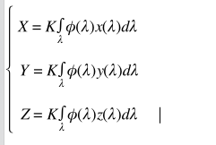
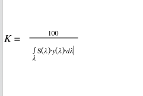

代码位于我的github 欢迎fork
色彩学实验一：颜色三刺激值的计算
三刺激值的概念：
混色系统是根据色度学的理论和实验证明任何色彩都可以有色光的三原色混合得到而建立的。色度三原色是红、绿、蓝。利用红、绿、蓝三色光可以混合匹配出任何想要的颜色，对于物体的表面色，需要用仪器测定其所反射或者投射的三原色光的数量，此三原色色光的作用量成为色彩的三刺激值。
CIE 1931 RGB 表色系统：
由于外界的光辐射作用于人厌，因而产生颜色的感觉，这说明，物体的颜色既取决于物理刺激，又取决于人眼的特性。为了定量的表示颜色，于是有了“标准色度观察者”又称全部的光谱三刺激值
色度坐标的概念：
在色度学体系中，不直接用三刺激值来表示颜色，而是用三原色个字在三原色总量（R+G+B）中的比例来表示颜色，相对比例叫做色度坐标。
CIE 1931 XYZ 系统的建立
在CIE1931RGB色度系统中计算颜色的三刺激值时会出现负值，给工业带来了不便，因此有了CIE 1931 XYZ表色系统 XYZ系统与RGB系统的色标转换关系为：
CIE 1964 XYZ 补充色度学表色系统：
人眼观察物体细节时的分辨力与观察时的视场大小有关，CIE 1931XYZ系统时在2°视场下的实验结果，适用于<4°的视场范围，CIE 1964 补充色度学系统为在10°视场下的表色系统
物体颜色三刺激值的计算
计算步骤：
- 确定光源及其相对光谱能量分布，物体表面颜色受照射光源能量分布的影响，因此，在测量物体表面时要确定其光源，如CIE 标准光源A、B、C、D50、D65等
- 确定颜色的刺激φ(λ)
对于光源色： φ(λ) = S(λ)
对于物体色： φ(λ) = S(λ)R(λ) 物体为反射物体时R(λ)为物体光谱反射率ρ(λ)。R(λ)=ρ(λ)。当物体为透射物体时R(λ)为光谱透射率 即R(λ)=τ(λ) - 确定标准观察者视场等大小
- 计算公式：


计算在光源D50 2°视场下的三刺激值 数据代码放在我的github里面
1 | import xlrd # 导入处理excel的库 |
色彩学实验二：验证中国颜色体系的均匀性
略
色彩学实验三
CIE 1931 XYZ表色系统不能满足人们对颜色差别量的表示
颜色宽容量：
- 概念：人眼感觉不出来的色彩的差别量（变化范围）叫做颜色的宽容量。
- 颜色色彩的差别量反映在色度图上就是指在色度图上两者色度坐标之间的距离。
- 为了克服CIE 1931 XYZ色度图的缺点，需要创建一个新的色度图，在这个色度图上，每个颜色的宽容量最好都近似椭圆形，而且大小相同，即此空间中的距离与视觉上的色彩感觉差别成正比。同时还要保证新的颜色空间的三个坐标一定要由原来的XYZ三刺激值计算得出
均匀颜色空间的发展
CIE1976 L* a* b* 均匀颜色空间
- 本颜色空间的优点：当颜色的色差大雨视觉识别的阈值而又小于孟塞尔系统中相邻两级色差时，可以较好的反应物体色的心里感受效果
L* a* b* 均匀颜色空间及其色差公式可以按照下面方程计算：
L*=116(Y/Y0)1/3-16
a*=500[(X/X0)1/3-(Y/Y0)1/3]
b*=200[(Y/Y0)1/3-(Z/Z0)1/3]式子中XYZ为颜色样品的三刺激值
式子中X0Y0Z0为CIE标准照明体的三刺激值
L*为心理计算明度简称心理明度
a* b* 为心理计量色度
- 色差及其计算公式：
用距离刻量
- 色差单位的提出：
NBS色差单位
CIE1976 L* u* v* 均匀颜色空间
略
色差公式
CMC（1:c） 色差公式
CIE94色差公式
CIEDE2000色差公式
略略略
代码实现过程：
代码一：手动实现，只实现了CMC(l:c)1
2
3
4
5
6
7
8
9
10
11
12
13
14
15
16
17
18
19
20
21
22
23
24
25
26
27
28
29
30
31
32
33
34
35
36
37
38
39
40
41
42
43
44
45
46
47
48
49
50
51
52
53
54
55
56
57
58
59
60
61
62
63
64
65
66
67
68
69
70
71
72
73
74
75
76
77
78
79
80
81
82
83
84
85
86
87
88
89
90
91
92
93
94
95
96
97
98import pandas as pd
import math
#1931
D50X0=96.42
D50Y0=100
D50Z0=82.51
#1964
D50X0=96.72
D50Y0=100
D50Z0=81.4
#1931
D65X0=95.04
D65Y0=100
D65Z0=108.88
#
Y0=100
x0 = 0.3101
y0=0.3162
X0 = x0*Y0/y0
Z0=(1-x0-y0)*Y0/y0
print(Y0,X0,Z0)
df = pd.read_excel("lab.xlsx")
Y = list()
X = list()
Z = list()
for i in range(0,df.shape[0]):
Y.append(df.Y[i])
X.append((df.x[i]*df.Y[i])/df.y[i])
Z.append(((1-df.x[i]-df.y[i])*df.Y[i])/df.y[i])
L = list()
a = list()
b = list()
# 将Yxy转化为Lab
for i in range(0,len(Y)):
L.append(116*pow((Y[i]/Y0),1/3)-16)
a.append(500*(pow((X[i]/X0),1/3)-pow((Y[i]/Y0),1/3)))
b.append(200*(pow((Y[i]/Y0),1/3)-pow((Z[i]/Z0),1/3)))
print('L值为',L)
print('a值为',a)
print('b值为',b)
dotaL = list()
dotaa = list()
dotab = list()
dotaEab = list()
for i in range(1,3):
dotaL.append(L[i]-L[0])
dotaa.append(a[i]-a[0])
dotab.append(b[i]-b[0])
dotaEab.append(math.sqrt(pow(L[i]-L[0],2)+pow(a[i]-a[0],2)+pow(b[i]-b[0],2)))
print("+++++++++++++色差++++++++++++++++++")
print("明度差dotaL:")
print(dotaL)
print("色度差:dotaa ")
print(dotaa)
print("色度差dotab")
print(dotab)
print("总色差:")
print(dotaEab)
print("+++++++++++++++++++++++++++++++++++")
# CMC(1:c) 色差公式
def CMC(L1,a1,b1,L2,a2,b2,l,c):
C1 = math.sqrt(a1*a1+b1*b1)
C2 = math.sqrt(a2*a2+b2*b2)
dC=C1-C2
dH = math.sqrt(pow((a1-a2),2)+pow((b1-b2),2)-dC*dC)
dL=L1-L2
da=a1-a2
db=b1-b2
if L1<16:
SL=0.511
else:
SL=(0.040975*L1)/(1+0.01765*L1)
SC = (0.0638*C1)/(1+0.0131*C1)+0.638
F = math.sqrt(C1**4/(C1**4+1900))
H = math.atan(b1/a1)
if H>0:
H1=H
else:
H1 = H+1
if H1>=(164/360) and H1<=(345/360):
T = 0.56+abs(0.2*math.cos(H1+168/360))
else:
T = 0.36+abs(0.4*math.cos(H1+35/360))
SH = SC*(F*T+1-F)
ans = math.sqrt((dL/(l*SL))**2+(dC/(c*SC))**2+(dH/SH)**2)
return ans
print("++++++++++++++++CMC(2:1)色差++++++++++++++++")
print(CMC(L[0],a[0],b[0],L[1],a[1],b[1],2,1))
print(CMC(L[0],a[0],b[0],L[2],a[2],b[2],2,1))
print("++++++++++++++++++++++++++++++++++++++++++++")
可以接着根据公式手动实现CIE94和CIEDE2000色差公式，写起来真的累，调用python 中colormath的库实现代码二
colormath说明文档
代码二：1
2
3
4
5
6
7
8
9
10
11
12
13
14
15
16
17
18
19
20
21
22
23
24
25
26
27
28
29
30
31
32
33# 导入colormath库
from colormath.color_objects import LabColor
import colormath
from colormath.color_diff import delta_e_cie1994
from colormath.color_diff import delta_e_cie2000
from colormath.color_diff import delta_e_cmc
# 代码二省去Yxy到Lab的转化
L=[87.86741111406972, 87.32443036534754, 85.98144068323823]
a=[-15.999098550928403, -15.177720926246751, -12.766918928785065]
b=[78.51938967753217, 86.37073015942863, 92.96415914568861]
#转化为colormath能读懂的数据
color0=LabColor(lab_l=L[0],lab_a=a[0],lab_b=b[0])
color1=LabColor(lab_l=L[1],lab_a=a[1],lab_b=b[1])
color2=LabColor(lab_l=L[2],lab_a=a[2],lab_b=b[2])
print("++++++++++++++++++CMC(2:1)色差计算++++++++++++++")
print(colormath.color_diff.delta_e_cmc(color0, color1, pl=2, pc=1))
print(colormath.color_diff.delta_e_cmc(color1, color2, pl=2, pc=1))
print(colormath.color_diff.delta_e_cmc(color0, color2, pl=2, pc=1))
print("++++++++++++++++++++++++++++++++++++++++++++++++",'\n')
print("++++++++++++++CIE94色差计算公式++++++++++++++++++++")
print(colormath.color_diff.delta_e_cie1994(color0, color1, K_L=1, K_C=1, K_H=1, K_1=0.045, K_2=0.015))
print(colormath.color_diff.delta_e_cie1994(color1, color2, K_L=1, K_C=1, K_H=1, K_1=0.045, K_2=0.015))
print(colormath.color_diff.delta_e_cie1994(color0, color2, K_L=1, K_C=1, K_H=1, K_1=0.045, K_2=0.015))
print("+++++++++++++++++++++++++++++++++++++++++++++++++",'\n')
print("++++++++++++++++CIEDE2000色差公式++++++++++++++++++")
print(colormath.color_diff.delta_e_cie2000(color0, color1, Kl=1, Kc=1, Kh=1))
print(colormath.color_diff.delta_e_cie2000(color1, color2, Kl=1, Kc=1, Kh=1))
print(colormath.color_diff.delta_e_cie2000(color0, color2, Kl=1, Kc=1, Kh=1))
print("+++++++++++++++++++++++++++++++++++++++++++++++++")